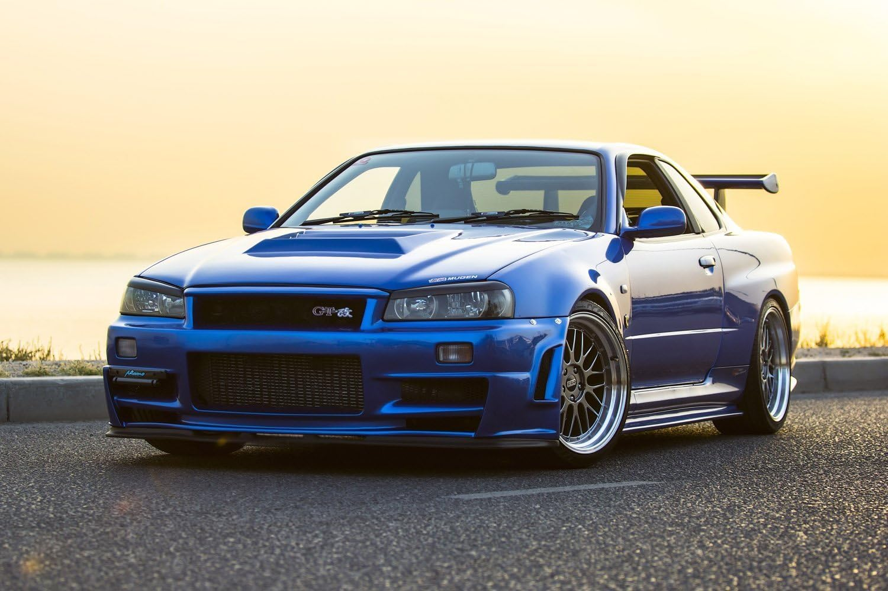
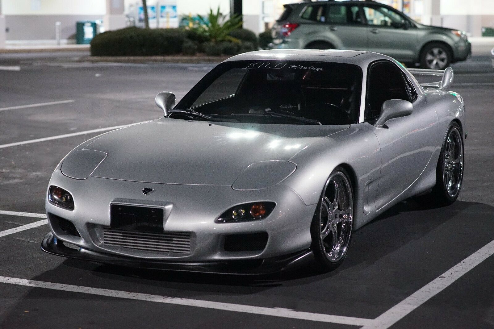
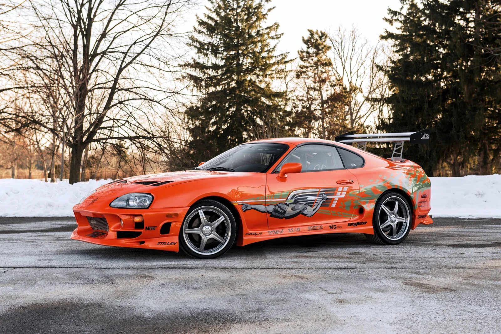
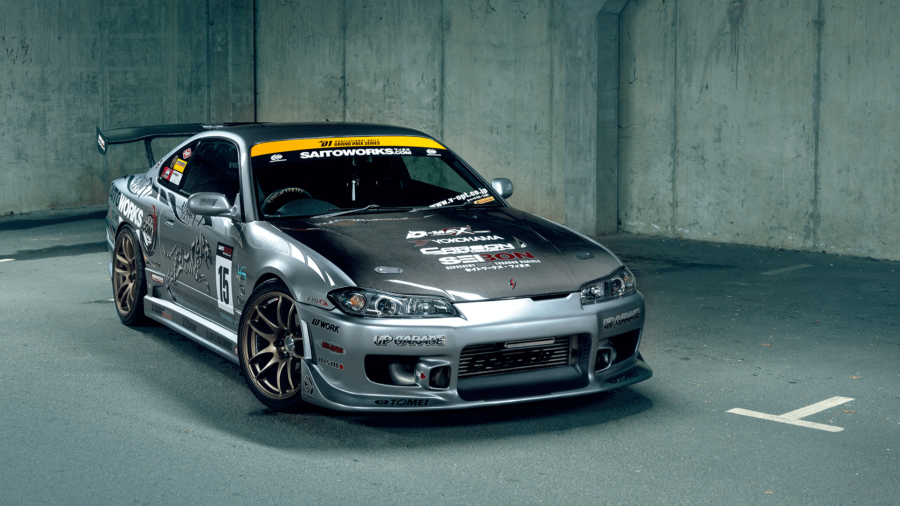
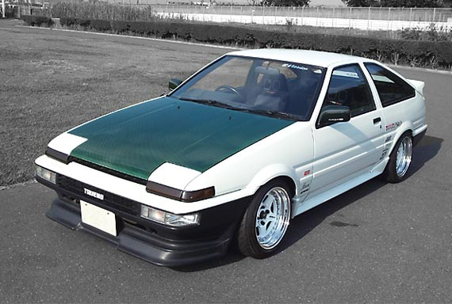
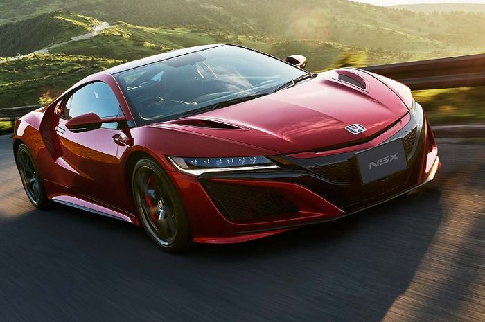
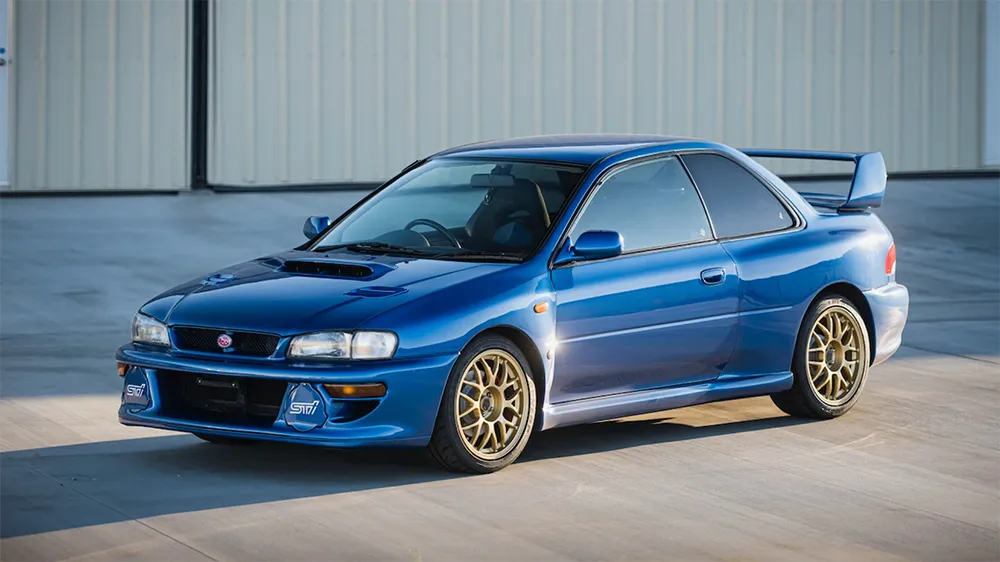
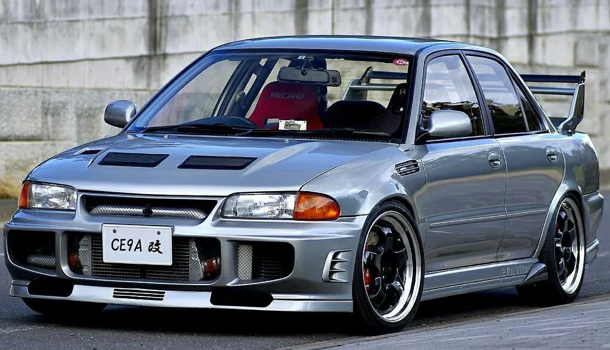

Nissan GTR R-34
Mazda RX-7
Toyota Supra MK-4
Nissan Silvia S15
Toyota AE86 Trueno
Honda NSX
Subaru Impreza 22B
Mitsubitshi Evo Lancer III
PHONK 1
PHONK 2
NISSAN GTR R-34

Nissan GT-R R34, yang diproduksi antara 1999 hingga 2002, adalah salah satu mobil sport ikonik yang dikenal luas di kalangan penggemar otomotif. Berikut adalah informasi lengkap tentangnya: Desain dan Fitur Eksterior: R34 memiliki desain aerodinamis dengan garis-garis tajam, bodykit agresif, dan lampu depan yang khas. Dimensinya cukup kompak untuk mobil sport. Interior: Interiornya dirancang dengan fokus pada pengemudi, dilengkapi dengan kursi sport, panel instrumen yang informatif, dan material berkualitas tinggi. Mesin dan Performa Mesin: Menggunakan mesin RB26DETT, yaitu mesin 2.6 liter inline-6 dengan dua turbocharger. Tenaga: Menghasilkan sekitar 276 hp dan torsi 392 Nm, meskipun beberapa tes menunjukkan angka yang lebih tinggi. Transmisi: Dikenal dengan transmisi 6-percepatan manual, yang memberikan kontrol lebih baik kepada pengemudi. Akselerasi: Dapat berakselerasi dari 0-100 km/jam dalam waktu sekitar 5,4 detik. Teknologi dan Inovasi Sistem AWD: Dikenal dengan sistem penggerak semua roda ATTESA E-TS, memberikan traksi dan stabilitas yang luar biasa. Sistem Suspensi: Menggunakan sistem suspensi independen di semua roda, yang memberikan kenyamanan dan performa tinggi di berbagai kondisi jalan. Peringkat dan Warisan Crossover Budaya Populer: GT-R R34 menjadi terkenal melalui film "Fast & Furious" dan banyak video game, sehingga memperkuat statusnya di budaya otomotif. Kompetisi: GT-R R34 banyak digunakan dalam motorsport, termasuk balap touring, dan menunjukkan performa yang sangat baik di trek. Model dan Variasi Beberapa varian R34 meliputi V-Spec, V-Spec II, dan Z-Tune, masing-masing dengan peningkatan performa dan fitur. Kesimpulan Nissan GT-R R34 adalah simbol dari performa dan inovasi dalam dunia mobil sport. Hingga saat ini, mobil ini masih menjadi buruan bagi kolektor dan penggemar otomotif karena desainnya yang menarik, performa tinggi, dan warisan budaya yang kaya.
MAZDA RX-7

Mazda RX-7 adalah mobil sport ikonik yang diproduksi oleh Mazda antara 1978 dan 2002. Berikut adalah informasi lengkap tentangnya: Generasi dan Tahun Produksi 1. Generasi Pertama (SA/FB, 1978-1985): Dikenal dengan mesin rotari pertama yang diproduksi massal. 2. Generasi Kedua (FC, 1986-1992): Memperkenalkan desain yang lebih modern dan peningkatan performa. 3. Generasi Ketiga (FD, 1992-2002): Merupakan generasi paling terkenal, dengan desain aerodinamis dan teknologi canggih. Desain dan Fitur Eksterior: RX-7 memiliki desain yang sporty dengan garis-garis halus dan bodi ringan. Generasi FD dikenal karena bentuknya yang aerodinamis. Interior: Interiornya berfokus pada pengemudi, dengan kursi sport dan tata letak yang ergonomis. Mesin dan Performa Mesin Rotari: Menggunakan mesin rotari Wankel, yang unik dibandingkan dengan mesin piston konvensional. Tenaga: Generasi pertama: Sekitar 100-135 hp tergantung varian. Generasi kedua: Sekitar 160-190 hp. Generasi ketiga: Dikenal dengan output 255 hp pada model turbo. Transmisi: Umumnya menggunakan transmisi manual 5-percepatan, dengan beberapa model menawarkan transmisi otomatis. Teknologi dan Inovasi Sistem Suspensi: Menggunakan suspensi independen yang meningkatkan handling dan kenyamanan. Berat Ringan: Struktur bodi yang ringan berkontribusi pada performa dan efisiensi bahan bakar. Peringkat dan Warisan Penghargaan: RX-7 sering diakui dalam berbagai penghargaan otomotif dan memiliki reputasi kuat dalam dunia balap. Budaya Populer: Menjadi populer dalam film dan video game, serta memiliki komunitas penggemar yang besar. Model dan Variasi Model Khusus: Termasuk RX-7 Spirit R, yang merupakan model akhir dari generasi FD dengan spesifikasi tinggi. Performa: RX-7 terkenal dengan kemampuan drift dan keunggulan dalam motorsport. Kesimpulan Mazda RX-7 adalah contoh inovasi otomotif dengan mesin rotari dan desain yang menarik. Hingga kini, mobil ini masih dihargai oleh kolektor dan penggemar karena performanya yang luar biasa dan warisannya dalam dunia mobil sport.
TOYOTA SUPRA MK4

Toyota Supra MK4, juga dikenal sebagai Toyota A80, diproduksi antara 1993 dan 2002. Mobil ini menjadi salah satu mobil sport paling ikonik dalam sejarah otomotif. Berikut adalah informasi lengkap tentangnya: Desain dan Fitur Eksterior: Supra MK4 memiliki desain yang aerodinamis dan agresif, dengan garis-garis tajam dan bentuk yang sporty. Lampu depan pop-up menambah daya tarik visualnya. Interior: Interiornya dirancang dengan fokus pada pengemudi, dilengkapi dengan kursi sport dan panel instrumen yang intuitif. Mesin dan Performa Mesin: Menggunakan mesin 3.0 liter inline-6 2JZ-GTE, yang terkenal kuat dan dapat dimodifikasi dengan mudah. Tenaga: Dikenal menghasilkan sekitar 276 hp dan torsi 427 Nm, meskipun dalam praktiknya, banyak yang mampu mencapai output yang lebih tinggi. Transmisi: Tersedia dengan transmisi manual 6-percepatan atau otomatis 4-percepatan. Teknologi dan Inovasi Sistem Penggerak: Menggunakan penggerak roda belakang (RWD) yang memberikan pengalaman berkendara yang sporty. Sistem Suspensi: Suspensi independen di depan dan belakang yang meningkatkan handling dan stabilitas. Peringkat dan Warisan Kinerja: Dikenal sebagai salah satu mobil sport terbaik di masanya, Supra MK4 sering digunakan dalam balap dan modifikasi. Budaya Populer: Menjadi terkenal berkat film "The Fast and the Furious" dan banyak video game, meningkatkan statusnya sebagai mobil ikonik. Model dan Variasi Model Khusus: Termasuk varian seperti Supra Turbo dan Supra Non-Turbo. Model Turbo lebih dicari karena performanya. Pengembangan: Versi khusus seperti Supra SZ dan Supra RZ memiliki perbedaan dalam fitur dan performa. Kesimpulan Toyota Supra MK4 adalah simbol dari performa dan inovasi dalam dunia mobil sport. Dengan mesin yang kuat, desain yang menarik, dan warisan budaya yang kaya, Supra MK4 tetap menjadi favorit di kalangan penggemar otomotif dan kolektor hingga hari ini.
NISSAN SILVIA S15

Nissan Silvia S15 adalah generasi kelima dari seri Nissan Silvia, yang diproduksi antara tahun 1999 hingga 2002. Mobil ini merupakan salah satu model yang paling ikonik dalam sejarah otomotif Jepang, terutama di kalangan penggemar mobil sport dan drifting. Berikut adalah pengertian lengkap mengenai Nissan Silvia S15: Desain dan Eksterior Desain Aerodinamis: S15 memiliki bodi yang ramping dengan garis-garis tajam dan front fascia yang agresif, dirancang untuk meningkatkan aerodinamika. Lampu Depan: Dikenal dengan lampu depan yang khas dan desain yang modern, memberikan tampilan yang sporty. Interior dan Fitur Fokus pada Pengemudi: Interior S15 dirancang dengan ergonomi yang baik, menawarkan kursi sport dan dasbor yang intuitif. Fitur Modern: Dilengkapi dengan sistem audio, AC, dan berbagai pilihan material yang meningkatkan kenyamanan berkendara. Mesin dan Performa Mesin SR20DET: S15 menggunakan mesin turbocharged 2.0 liter inline-4, yang terkenal karena kinerjanya yang baik dan kemudahan modifikasi. Performa Tinggi: Dengan tenaga sekitar 250 hp, S15 mampu memberikan akselerasi yang cepat dan handling yang responsif. Transmisi Pilihan Transmisi: Tersedia dengan transmisi manual 6-percepatan dan otomatis 4-percepatan, memberikan pilihan bagi pengemudi untuk memilih gaya berkendara. Handling dan Responsivitas: Transmisi manual menawarkan kontrol lebih baik, sementara otomatis memberikan kenyamanan dalam berkendara sehari-hari. Teknologi dan Inovasi Suspensi: Menggunakan suspensi independen di depan dan belakang untuk memberikan keseimbangan antara kenyamanan dan performa. Sistem Rem: Dikenal dengan sistem pengereman yang responsif, penting untuk performa tinggi dan keselamatan. Model dan Variasi Varian: Tersedia dalam beberapa model, seperti Spec-S (fokus pada kenyamanan) dan Spec-R (fokus pada performa). Fitur Khusus: Spec-R biasanya dilengkapi dengan fitur tambahan, seperti diferensial terbatas dan suspensi yang lebih baik. Peringkat dan Warisan Popularitas dalam Drifting: S15 menjadi salah satu mobil yang sangat dihormati di dunia drifting, sering digunakan oleh pembalap profesional. Ikon Mobil Sport: Terkenal di seluruh dunia sebagai simbol dari era mobil sport Jepang, S15 tetap menjadi favorit di kalangan kolektor dan penggemar otomotif. Kesimpulan Nissan Silvia S15 adalah kombinasi yang luar biasa dari desain yang menarik, performa yang mengesankan, dan potensi modifikasi yang tinggi. Dengan warisan yang kuat dalam dunia motorsport dan popularitas yang tak pudar, S15 terus menjadi salah satu mobil sport yang paling dihargai dan dicari hingga saat ini.
TOYOTA AE86

Toyota AE86 Trueno adalah mobil legendaris yang diproduksi oleh Toyota antara 1983 dan 1987. Mobil ini dikenal luas di kalangan penggemar otomotif, terutama dalam budaya drifting dan motorsport. Berikut adalah informasi lengkap mengenai AE86 Trueno: Desain dan Fitur Eksterior: AE86 memiliki desain yang kompak dan sporty, dengan garis-garis yang tajam. Dikenal dengan lampu depan pop-up yang ikonik, varian Trueno memiliki gril yang berbeda dibandingkan dengan varian Levin. Interior: Interiornya sederhana namun fungsional, dengan fokus pada pengemudi. Dikenal dengan kursi yang mendukung dan dashboard yang ergonomis. Mesin dan Performa Mesin: Ditenagai oleh mesin 1.6 liter inline-4, tipe 4A-GE, yang terkenal dengan performa dan responsif. Tenaga: Mesin ini menghasilkan sekitar 130 hp pada putaran tinggi, yang cukup untuk mobil seukuran ini. Transmisi: Tersedia dalam transmisi manual 5-percepatan atau otomatis 4-percepatan. Penggerak Roda: Dikenal dengan penggerak roda belakang (RWD), yang membuatnya sangat ideal untuk drifting. Teknologi dan Inovasi Sistem Suspensi: Menggunakan suspensi independen di depan dan belakang, memberikan handling yang baik dan responsif. Bobot Ringan: Dengan bobot yang ringan, AE86 sangat lincah dan mudah dikendalikan. Peringkat dan Warisan Budaya Drifting: AE86 menjadi sangat populer dalam komunitas drifting, terutama di Jepang, berkat film "Initial D" yang menampilkan mobil ini sebagai karakter utama. Koleksi: Mobil ini sekarang menjadi kolektor yang sangat dicari, terutama dalam kondisi baik, dan memiliki basis penggemar yang kuat. Model dan Variasi Varian: Terdapat dua varian utama: Trueno (dengan lampu pop-up) dan Levin (dengan lampu tetap). Keduanya menggunakan platform yang sama tetapi memiliki desain front-end yang berbeda. Fitur Khusus: Beberapa model dilengkapi dengan fitur tambahan seperti LSD (limited-slip differential) dan pengaturan suspensi yang lebih baik. Kesimpulan Toyota AE86 Trueno adalah simbol dari keahlian berkendara dan keunikan dalam dunia mobil sport. Dengan performa yang baik, desain yang ikonik, dan warisan budaya yang mendalam, AE86 tetap menjadi favorit di kalangan penggemar otomotif dan kolektor hingga saat ini.
HONDA NSX

Honda NSX, dikenal juga sebagai Acura NSX di beberapa pasar, adalah mobil sport ikonik yang pertama kali diperkenalkan pada tahun 1990. Berikut adalah informasi lengkap tentang NSX: Desain dan Fitur Eksterior: NSX memiliki desain aerodinamis yang elegan dan futuristik, dengan bodi yang terbuat dari aluminium yang ringan. Garis-garis halus dan lekukan yang tajam menjadikannya sangat menarik secara visual. Interior: Interior NSX dirancang dengan fokus pada pengemudi, menggunakan material berkualitas tinggi dan tata letak yang ergonomis. Dikenal dengan kursi sport yang nyaman dan teknologi yang intuitif. Mesin dan Performa Generasi Pertama (1990-2005): Mesin: Ditenagai oleh mesin V6 3.0 liter (kemudian 3.2 liter) dengan konfigurasi DOHC dan teknologi VTEC. Tenaga: Menghasilkan sekitar 270 hp pada model awal dan hingga 290 hp pada model terakhir. Transmisi: Tersedia dengan transmisi manual 5-percepatan atau otomatis 4-percepatan. Generasi Kedua (2016-sekarang): Mesin: Menggunakan mesin V6 twin-turbocharged 3.5 liter yang dipadukan dengan motor listrik untuk sistem hybrid. Tenaga: Menghasilkan total sekitar 573 hp dengan torsi 645 Nm. Transmisi: Dikenal dengan transmisi otomatis 9-percepatan dual-clutch. Teknologi dan Inovasi Sistem Penggerak: NSX terkenal dengan penggerak semua roda (AWD) pada generasi kedua, yang meningkatkan traksi dan stabilitas. Suspensi: Menggunakan suspensi independen yang dirancang untuk memberikan handling yang luar biasa dan kenyamanan berkendara. Peringkat dan Warisan Performa: NSX sering dianggap sebagai salah satu mobil sport terbaik pada masanya, dengan kemampuan mengalahkan banyak rival Eropa dalam balapan. Budaya Populer: NSX sering muncul dalam film, video game, dan acara otomotif, meningkatkan statusnya sebagai mobil ikonik. Model dan Variasi Varian Khusus: Termasuk model seperti NSX Type R yang dirancang untuk performa maksimal dengan bobot yang lebih ringan dan peningkatan aerodinamika. Limited Editions: Beberapa edisi terbatas telah diluncurkan, termasuk varian dengan warna khusus dan fitur tambahan. Kesimpulan Honda NSX adalah contoh sempurna dari kombinasi teknologi canggih, performa tinggi, dan desain yang menarik. Dengan warisan yang kuat dan reputasi sebagai salah satu mobil sport terbaik, NSX tetap menjadi ikon dalam dunia otomotif, baik di jalan raya maupun di lintasan balap.
SUBARU IMPREZA 22B

Subaru Impreza 22B adalah salah satu mobil sport paling ikonik yang diproduksi oleh Subaru. Berikut adalah informasi lengkap mengenai model ini: Desain dan Fitur Eksterior: 22B memiliki desain yang agresif dan sporty, dengan bodykit lebar, spoiler belakang yang mencolok, dan kap mesin yang terbuat dari bahan ringan. Warna khas "World Rally Blue" menjadi ciri khas model ini. Interior: Interiornya sederhana namun fungsional, dengan kursi Recaro yang mendukung dan dashboard yang ergonomis. Fokus pada pengemudi terlihat jelas di tata letak kontrol. Mesin dan Performa Mesin: Ditenagai oleh mesin 2.0 liter turbocharged flat-four (Boxer), tipe EJ20. Tenaga: Menghasilkan sekitar 280 hp dan torsi 392 Nm. Transmisi: Dikenal dengan transmisi manual 5-percepatan yang responsif. Penggerak Roda: Memiliki sistem penggerak semua roda (AWD) yang meningkatkan traksi dan stabilitas, terutama di kondisi jalan yang sulit. Teknologi dan Inovasi Sistem Suspensi: Menggunakan suspensi independen yang disetel untuk performa tinggi, memberikan handling yang luar biasa di lintasan maupun di jalan raya. Penggunaan Bahan Ringan: Penggunaan panel bodi dari aluminium dan bahan komposit membantu mengurangi bobot keseluruhan. Peringkat dan Warisan Rally Heritage: 22B dibuat sebagai peringatan atas kemenangan Subaru di World Rally Championship (WRC), sehingga menjadi mobil yang sangat dihargai di kalangan penggemar motorsport. Koleksi: Model ini sangat dicari oleh kolektor dan penggemar, dengan hanya 400 unit yang diproduksi, menjadikannya sangat langka. Model dan Variasi Model Khusus: 22B adalah varian terbatas dari Impreza WRX, dirancang khusus untuk menandai keberhasilan Subaru di WRC. Fitur Khusus: Dilengkapi dengan fitur performa tambahan, termasuk rem yang lebih besar dan peningkatan aerodinamika. Kesimpulan Subaru Impreza 22B adalah simbol dari performa, inovasi, dan warisan motorsport. Dengan desain yang menarik, mesin yang kuat, dan kemampuan luar biasa, 22B tetap menjadi salah satu mobil sport paling dihargai dan dicari di dunia otomotif.
MITSUBISHI EVO-LAN III

Mitsubishi Lancer Evolution III, sering disingkat sebagai Evo III, adalah generasi ketiga dari seri Lancer Evolution yang diproduksi oleh Mitsubishi Motors antara tahun 1995 dan 1996. Mobil ini dikenal sebagai salah satu mobil sport yang ikonik dalam dunia rally. Berikut adalah informasi lengkap mengenai Evo III: Desain dan Fitur Eksterior: Evo III memiliki desain yang agresif dan aerodinamis, dengan bodykit yang lebih lebar, spoiler belakang yang besar, dan lampu depan yang khas. Interior: Interiornya dirancang fungsional dengan fokus pada pengemudi, dilengkapi dengan kursi sport dan dashboard yang sederhana namun informatif. Mesin dan Performa Mesin: Ditenagai oleh mesin 2.0 liter inline-4 4G63T turbocharged. Tenaga: Menghasilkan sekitar 280 hp dan torsi 388 Nm, dengan kemampuan akselerasi yang sangat baik. Transmisi: Dikenal dengan transmisi manual 5-percepatan yang responsif. Penggerak Roda: Menggunakan sistem penggerak semua roda (AWD), memberikan traksi yang sangat baik di berbagai kondisi. Teknologi dan Inovasi Sistem Suspensi: Menggunakan suspensi independen di depan dan belakang, yang dituning untuk performa tinggi dan stabilitas saat berkendara. Sistem Rem: Dikenal dengan rem yang lebih besar dan lebih efisien dibandingkan generasi sebelumnya, meningkatkan kemampuan pengereman. Peringkat dan Warisan Rally Heritage: Evo III memiliki reputasi kuat dalam motorsport, terutama di World Rally Championship (WRC), berkontribusi pada kesuksesan Mitsubishi di arena rally. Popularitas: Mobil ini memiliki penggemar setia, terutama di kalangan pecinta rally dan mobil modifikasi. Model dan Variasi Varian: Terdapat beberapa varian dari Evo III, termasuk model standar dan model dengan spesifikasi lebih tinggi. Fitur Khusus: Beberapa model dilengkapi dengan fitur tambahan seperti LSD (limited-slip differential) dan peningkatan pada sistem suspensi. Kesimpulan Mitsubishi Lancer Evolution III adalah mobil sport yang sangat dihargai karena performa tinggi, teknologi yang canggih untuk zamannya, dan warisan kuat di dunia rally. Hingga saat ini, Evo III tetap menjadi favorit di kalangan kolektor dan penggemar mobil sport.
Berikan Ulasan Anda
 |
 |
 |
 |